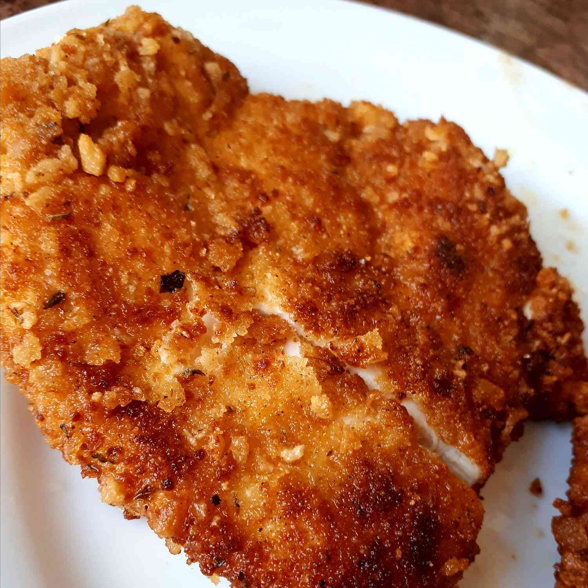

Schnitzel Recipe

The quick, crispy chicken dinner you didn't know you needed.
Schnitzel holds a special place in my heart. There's a therapeutic element
to the process I think. Something about smashing chicken flat, and then
proceeding to create a beautiful breaded meal from it satisfies my soul.
It's like destroying a simple lego structure and then building Something
new and exciting with the same contents. This crispy, juicy schnitzel will have your
family asking for seconds, easily. I'm a huge fan of pairing this with bacon-wrapped
asparagus. Enjoy!
Ingredients
- 2 large eggs
- 3 tablesboons honey
- 3 tablespoons dijon mustard
- 2 1/2 tablesboons soy sauce
- 1 tablespoon crushed garlic
- 3 cups bread crumbs, or as needed
- 1 teaspoon salt
- 1 teaspoon ground black pepper
- vegetable oil for frying
- 12 boneless chicken breast halves, pounded very thin
- 1 lemon, cut into wedges
Steps
- Whisk eggs, honey, Dijon mustard, soy sauce, and garlic together in a bowl. Mix bread crumbs, salt, and pepper together in a shallow bowl.
- Heat 1/2 to 1 inch of vegetable oil in a heavy skillet to 350 degrees F (175 degrees C). You can also use a deep fryer.
- Put chicken slices in the egg mixture and knead until fully coated. Press chicken in the bread crumbs until evenly coated.
- Working in batches, carefully place chicken in the hot oil using tongs and cook until no longer pink in the center and browned on the outside, 3 to 4 minutes per side. Drain on paper towels and serve with lemon wedges.
Home